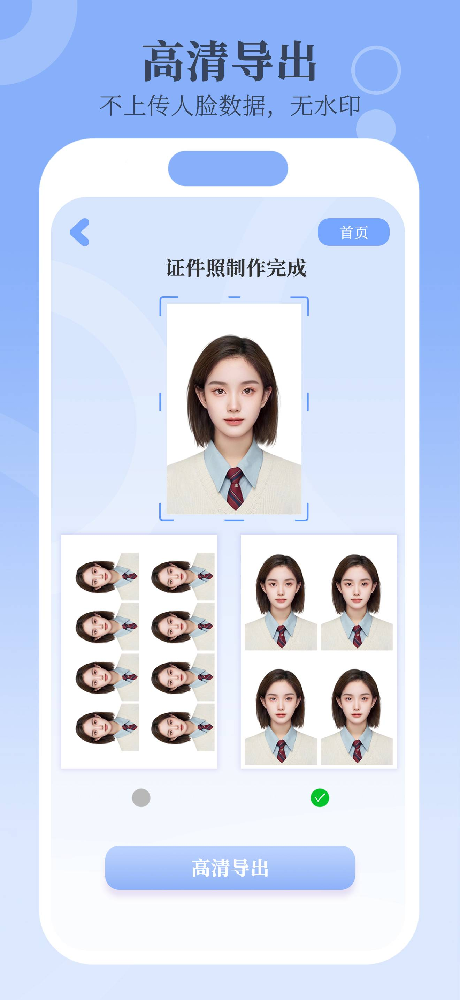

证件照多联排版与打印
小美证件照支持把多张照片排在6×4英寸相纸上，方便一次打印多张。
- 先制作单张照片，核对所选尺寸和人物构图。
- 使用 App 的多联排版功能，检查导出预览中各张照片是否完整。
- 将排版文件交给打印店或打印软件，明确相纸为6×4英寸。
- 打印时检查缩放设置，避免“适合页面”改变照片尺寸。先试打一张，用尺测量单张照片，再批量打印。

排版与单张尺寸的区别
6×4英寸描述的是整张相纸，不是每张证件照的大小。能排多少张取决于单张尺寸和排版，不承诺固定张数。打印排版也不会验证照片是否满足某项申请要求。